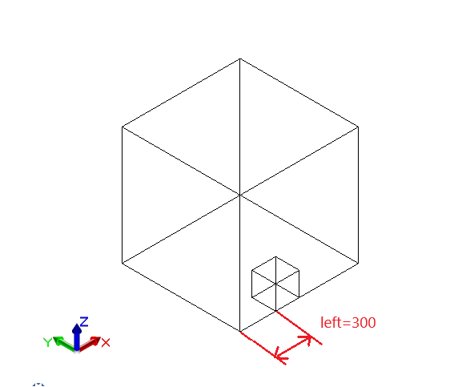
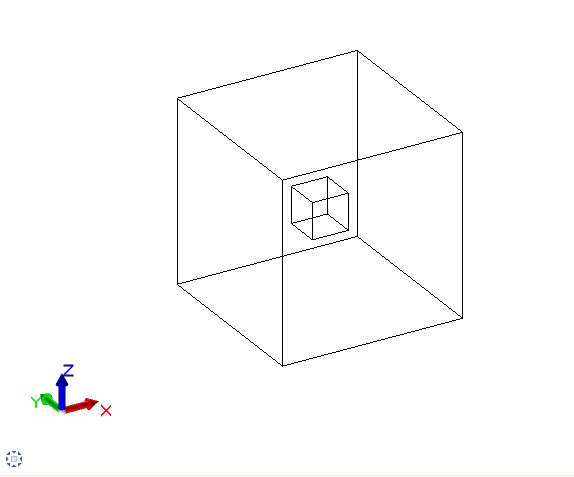
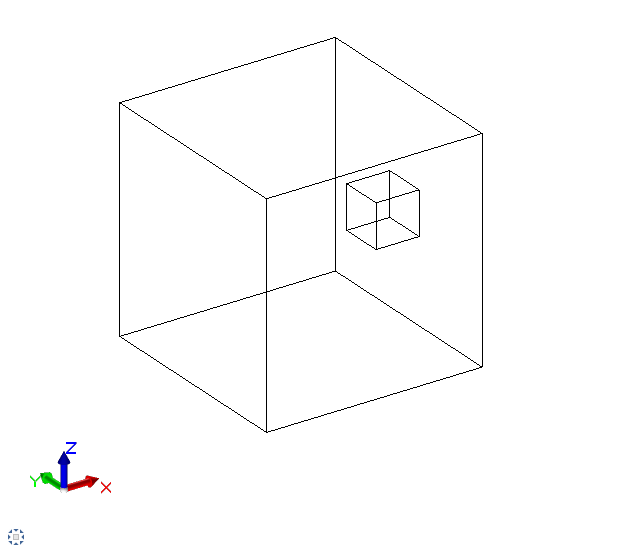
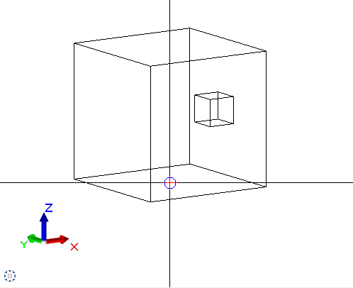
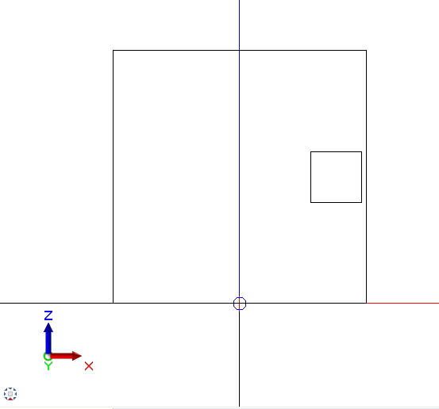

API#
Public Interface#
- create_scene(build_ele)#
Creates a canvas. All objects should be placed on Scene.
- Parameters:
build_ele – Given by Allplan
BuildingElementobject- Returns:
SceneobjectUsage:
>>> import pythonparts as pp >>> c = pp.create_cuboid(200, 1000, 100) >>> scene = pp.create_scene('build_ele') >>> scene.place(c) >>> scene Scene(children=[Cuboid(width=200, length=1000, height=100)])
- create_cuboid(width, length, height)#
Constructs
Cuboidobject with start global point =Point3D(0, 0, 0).- Parameters:
width – Width of Cuboid. Goes along X axis in Allplan.
length – Length of Cuboid. Goes along Y axis in Allplan.
height – Height of Cuboid. Goes along Z axis in Allplan.
- Returns:
Cuboidobject- Return type:
pythonparts.Cuboid
Usage:
>>> import pythonparts as pp >>> c = pp.create_cuboid(200, 1000, 100) >>> c Cuboid(width=200, length=1000, height=100)
- create_cuboid_from_pyp(pyp_name)#
Constructs
Cuboidobject fetching width, length, and height from the according pyp file.- Parameters:
pyp_name –
According pyp file has to have three following parameters:
pyp_name + ‘Width’
pyp_name + ‘Length’
pyp_name + ‘Height’
- Returns:
Cuboidobject- Return type:
pythonparts.Cuboid
Inside pyp file:
<Parameter> <Name>ColumnWidth</Name> <Text>Column Width</Text> <Value>200.</Value> <ValueType>Length</ValueType> </Parameter> <Parameter> <Name>ColumnLength</Name> <Text>Column Length</Text> <Value>1000.</Value> <ValueType>Length</ValueType> </Parameter> <Parameter> <Name>ColumnHeight</Name> <Text>Column Height</Text> <Value>100.</Value> <ValueType>Length</ValueType> </Parameter>
Usage:
>>> import pythonparts as pp >>> c = pp.create_cuboid_from_pyp('Column') >>> c Cuboid(width=200, length=1000, height=100)
Classes#
- class pythonparts.geometry.Scene(build_ele)#
- property model_ele_list: List[ModelElement3D]#
- Returns:
Returns a list of AllplanBasisElements.ModelElement3D objects.
- property reinf_ele_list#
- Returns:
a list of reinforcement elements.
- property pythonpart#
Creates a Python part by adding 2D/3D views and reinforcement elements to the model element list and then creating the Python part using the build element. :return: an instance of the PythonPart.
- place(child_space: Space, center=False, **concov_sides)#
See explanation in
pythonparts.geometry.Space.place()
- class pythonparts.geometry.Cuboid(width, length, height, global_start_pnt=None, com_prop=None)#
Essentially a Polyhedron3D that’s flexible because of child-parent relations with other
Cuboid. Can be easily adjusted on aSceneand built or used as space/boundary for other objects(like Reinforcement).- __init__(width, length, height, global_start_pnt=None, com_prop=None)#
Assignes width, length and height of child objects
pythonparts.geometry.Scene,pythonparts.geometry.CuboidIn future versions you will be able to hide or subtract
Spaceobjects- Parameters:
width (float value >= 0.) – Set a width of an object.
length (float value >= 0.) – Set a length of an object.
height (float value >= 0.) – Set a length of an object.
global_start_pnt (
NoneorAllplanGeo.Point3D) – Set Global Start Point on coordinate axis. If not set, it will beAllplanGeo.Point3D(0, 0, 0)
- property polyhedron#
- Returns:
AllplanGeo.Polyhedron3Dcreated withAllplanGeo.Polyhedron3D.CreateCuboid
- property com_prop#
Returning the basic set
CommonPropertiesobject of givenCuboid
- build() List[ModelElement3D]#
Recursively builds a list of AllplanBasisElements.ModelElement3D objects for itselt and all its
children:return: a list of AllplanBasisElements.ModelElement3D objects.
- property global_: Coords#
- Returns:
Global coordinates of this
Spaceobject.- Return type:
pythonparts.geometry.coords.Coords
- property local: Coords#
- Returns:
Local coordinates of this
Spaceobject.- Return type:
pythonparts.geometry.coords.Coords
- place(child_space: Space, center: bool = False, **concov_sides)#
Position a child space inside a parent space, with options for centering and specifying the position of each side.
- Info:
If you don’t define center and sides , child global start point will be equal parent global start point.
- Parameters:
child_space ("Space") – Represents the space that will be placed inside the parent space
center (bool (optional)) – A boolean value indicating whether the child space should be centered within the parent space. If set to True, the left, front, and bottom shifts will be redefined by the center_calc function, defaults to False
- Warning:
Opposite sides(left and right; front and back; top and bottom) are not allowed to have values at same time.
- Example:
- Let’s first create two cubes. One with sides 200x200x200, another 1000x1000x1000:
>>> import pythonparts as pp >>> small_cube = pp.create_cuboid(200, 200, 200) >>> big_cube = pp.create_cuboid(1000, 1000, 1000)
And place small cube inside big one with left shift = 300
>>> big_cube.place(small_cube, left=300)
After creating scene inside
create_element()and returning pythonpart, we will obtain the following result:>>> def create_element(build_ele, doc): >>> scene = pp.create_scene(build_ele) >>> scene.place(big_cube) >>> return scene.pythonpart
- Example:
If we place small cube inside very center, we will obtain the following:
>>> big_cube.place(small_cube, center=True)
** Other code is the same **
- Example:
Placing center and shift right=20 will give us:
>>> big_cube.place(small_cube, center=Ture, right=20)
** Other code is the same **
- Example:
You can also adjust starting point, placing main object on a scene with parameters:
>>> scene.place(big_cube, center=True, bottom=0)
** Other code is the same **
 
- update_global_coords(parent_global_coords: Coords)#
Set new Global coordinates for this
Spaceobject and all itschildren- Parameters:
parent_global_coords (Coords) – An instance of the Coords class. It represents the global coordinates of the parent object.
- _children: List[Space]#
Inner attribute that contains list of
Spacethat wereplaced.